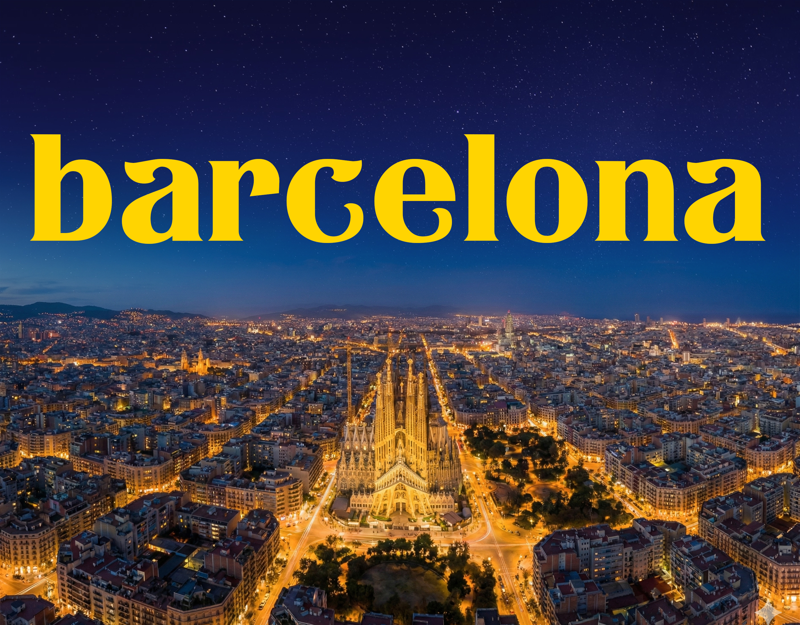
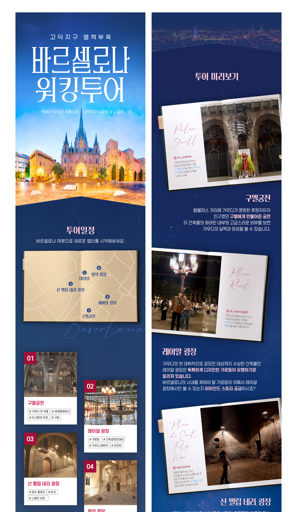
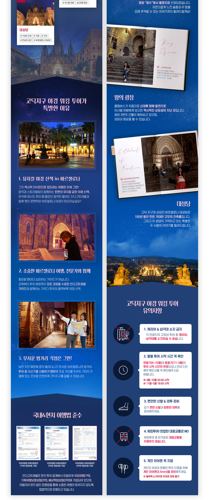

바르셀로나는 고딕 양식 건축물과 황홀한 야경으로 한국인 여행객이 가장 사랑하는 스페인 여행지입니다.
그러나 화려한 밤거리 이면에는 안전 문제가 도사리고 있어, 여행객들의 각별한 주의가 요구됩니다.
이러한 현실을 반영하여 기획된 가이드 동반 야간 워킹투어는 단순한 안전 대책을 넘어, 바르셀로나의 진면목을 만나는 특별한 경험을 선사합니다.
전문 가이드의 생생한 해설과 함께 도시 곳곳에 숨겨진 역사와 문화를 오감으로 느끼며, 혼자서는 결코 발견할 수 없었던 골목의 보석 같은 명소들을 탐험하게 됩니다.
안심하고 걷는 밤, 그 속에서 더욱 깊어지는 여행의 감동. 이 투어는 관광객에게는 잊지 못할 추억을, 도시에는 활기찬 야간 경제를 선물할 것입니다.
상세페이지 기획 : 20% ㅣ 상세페이지 디자인 : 100% ㅣ 레터링 디자인 : 100%

